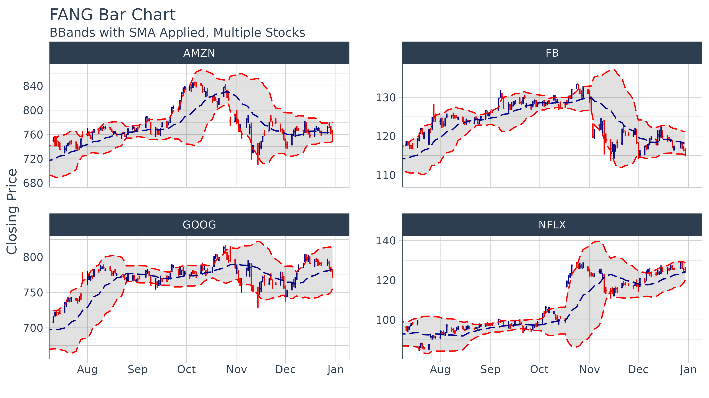

Introduction to tidyquant
Matt Dancho
2024-01-04
Source:vignettes/TQ00-introduction-to-tidyquant.Rmd
TQ00-introduction-to-tidyquant.Rmd2-Minutes To Tidyquant
Our short introduction to tidyquant on YouTube.

Check out our entire Software Intro Series on YouTube!
Benefits
- A few core functions with a lot of power
- Integrates the quantitative analysis functionality of
zoo,xts,quantmod,TTR, andPerformanceAnalytics - Designed for modeling and scaling analyses using the
tidyversetools in R for Data Science - Implements
ggplot2functionality for beautiful and meaningful financial visualizations - User-friendly documentation to get you up to speed quickly!
A Few Core Functions with A Lot of Power
Minimizing the number of functions reduces the learning curve. What we’ve done is group the core functions into four categories:
Get a Stock Index,
tq_index(), or a Stock Exchange,tq_exchange(): Returns the stock symbols and various attributes for every stock in an index or exchange. Eighteen indexes and three exchanges are available.Get Quantitative Data,
tq_get(): A one-stop shop to get data from various web-sources.Transmute,
tq_transmute(), and Mutate,tq_mutate(), Quantitative Data: Perform and scale financial calculations completely within thetidyverse. These workhorse functions integrate thexts,zoo,quantmod,TTR, andPerformanceAnalyticspackages.Performance analysis,
tq_performance(), and portfolio aggregation,tq_portfolio(): ThePerformanceAnalyticsintegration enables analyzing performance of assets and portfolios. Refer to Performance Analysis with tidyquant.
For more information, refer to the first topic-specific vignette, Core Functions in tidyquant.
Integrates the Quantitative Analysis Functionality of xts/zoo, quantmod TTR and Performance Analytics
There’s a wide range of useful quantitative analysis functions (QAF)
that work with time-series objects. The problem is that many of these
wonderful functions don’t work with data frames or the
tidyverse workflow. That is until now. The
tidyquant package integrates the most useful functions from
the xts, zoo, quantmod,
TTR, and PerformanceAnalytics packages,
enabling seamless usage within the tidyverse workflow.
Refer below for information on the performance analysis and portfolio
attribution with the PerformanceAnalytics integration.
For more information, refer to the second topic-specific vignette, R Quantitative Analysis Package Integrations in tidyquant.
Designed for the data science workflow of the tidyverse
The greatest benefit to tidyquant is the ability to
easily model and scale your financial analysis. Scaling is the process
of creating an analysis for one security and then extending it to
multiple groups. This idea of scaling is incredibly useful to financial
analysts because typically one wants to compare many securities to make
informed decisions. Fortunately, the tidyquant package
integrates with the tidyverse making scaling super
simple!
All tidyquant functions return data in the
tibble (tidy data frame) format, which allows for
interaction within the tidyverse. This means we can:
- Seamlessly scale data retrieval and mutations
- Use the pipe (
%>%) for chaining operations - Use
dplyrandtidyr:select,filter,group_by,nest/unnest,spread/gather, etc - Use
purrr: mapping functions withmap
For more information, refer to the third topic-specific vignette, Scaling and Modeling with tidyquant.
Implements ggplot2 Functionality for Financial Visualizations
The tidyquant package includes charting tools to assist
users in developing quick visualizations in ggplot2 using
the grammar of graphics format and workflow.

For more information, refer to the fourth topic-specific vignette, Charting with tidyquant.
Performance Analysis of Asset and Portfolio Returns
Asset and portfolio performance analysis is a deep field with a wide
range of theories and methods for analyzing risk versus reward. The
PerformanceAnalytics package consolidates many of the most
widely used performance metrics as functions that can be applied to
stock or portfolio returns. tidyquant implements the
functionality with two primary functions:
-
tq_performance()implements the performance analysis functions in a tidy way, enabling scaling analysis using the split, apply, combine framework. -
tq_portfolio()provides a useful toolset for aggregating a group of individual asset returns into one or many portfolios.
Performance is based on the statistical properties of returns, and as a result both functions use returns as opposed to stock prices.
For more information, refer to the fifth topic-specific vignette, Performance Analysis with tidyquant.